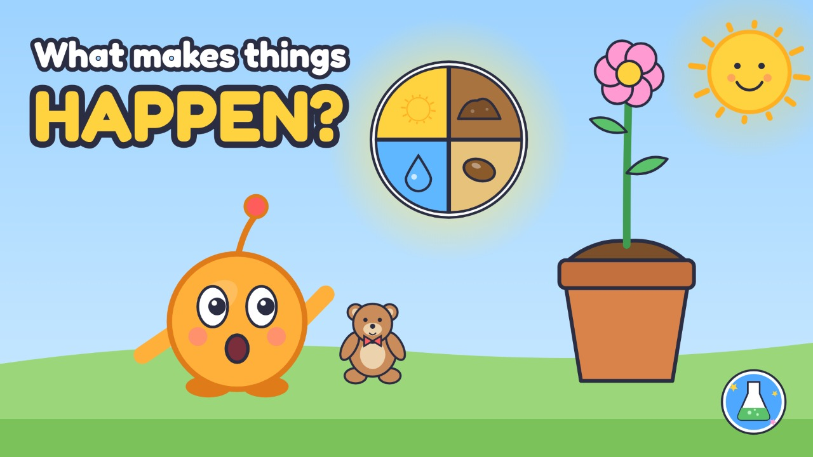
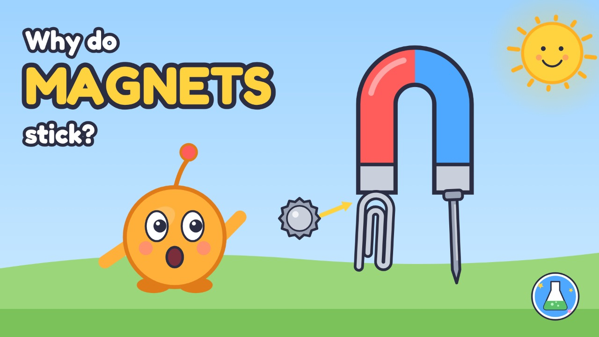
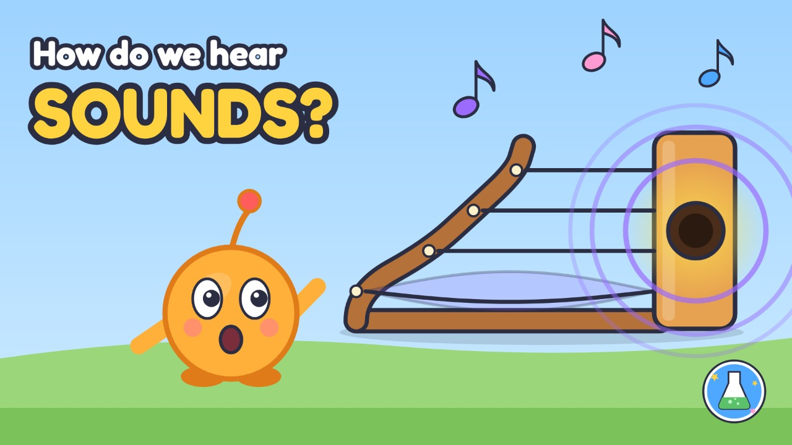
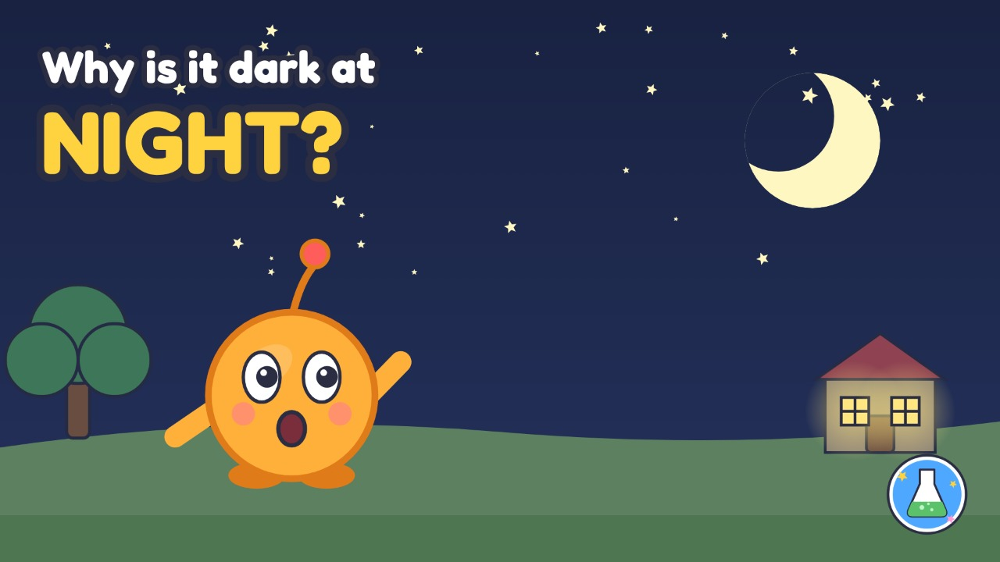
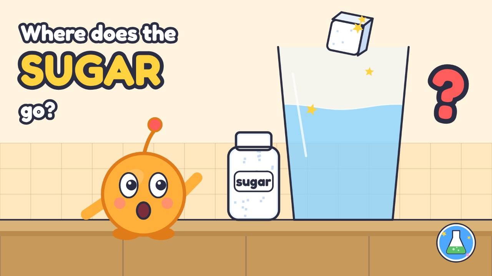
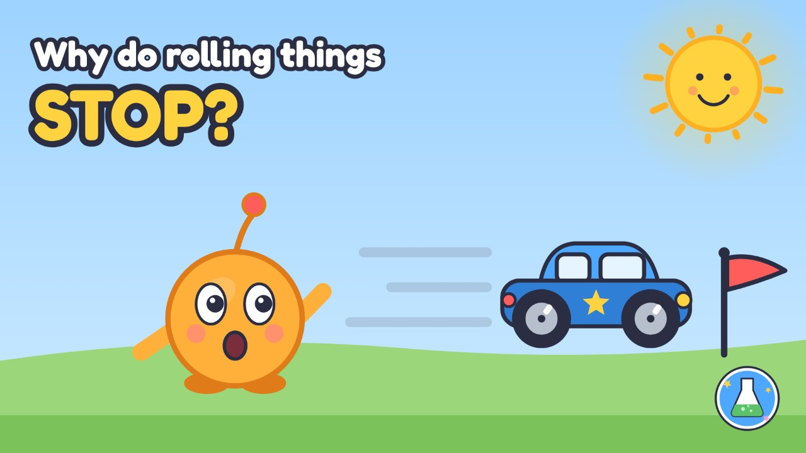

Little Scientists Club
Big questions, little scientists
Pick a question to explore
Every episode has a short animated story and a hands-on simulation you can play with. Made for 5–6-year-olds, with a grown-up nearby.

Episode 1Why does ice cream melt?Watch with Curie, then play: heat makes things melt.

Episode 2Why does a ball always come down?Watch with Curie, then play: gravity pulls things down.

Episode 3Where does rain come from?Watch with Curie, then play: the sun lifts the water up, and the rain brings it down.

Episode 4Why do I have a shadow?Watch with Curie, then play: a shadow is where the light can't go.

Episode 5Why do boats float?Watch with Curie, then play: water pushes up.

Episode 6What makes things happen?Watch with Curie, then play: lots of pieces make it happen.

Episode 7Why do magnets stick?Watch with Curie, then play: magnets pull iron.

Episode 8How do we hear sounds?Watch with Curie, then play: sounds are wiggles.

Episode 9Why is it dark at night?Watch with Curie, then play: the Earth spins.

Episode 10Where does the sugar go?Watch with Curie, then play: sugar dissolves in water, but it's still there.

Episode 11Why do rolling things stop?Watch with Curie, then play: rubbing slows it down.
How to use this site
Each episode page starts with the story, narrated by Curie with captions. Then tap Try it and do the science yourself. From Episode 7 on, each episode has two activities, Try it 1 and Try it 2. In the episodes you can:
- drag the sun
- throw the ball
- make it rain
- stretch a shadow
- sort things into the pond
- fill Curie's cause pie
- test things with a magnet
- pluck strings and bang a drum
- spin the Earth
- dissolve sugar in water
- race a car down a ramp
Underneath you will find the big idea, an experiment to try at home, and a three-question quiz to talk about together.